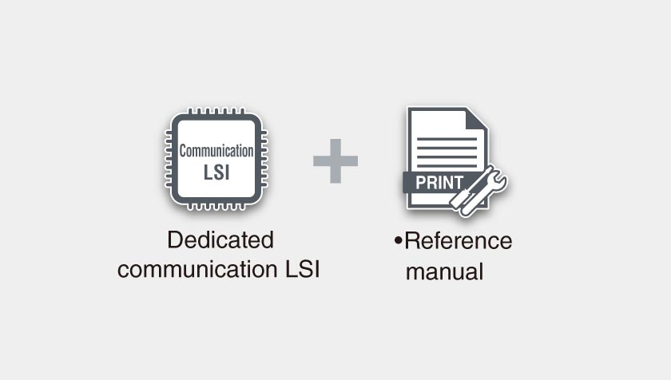
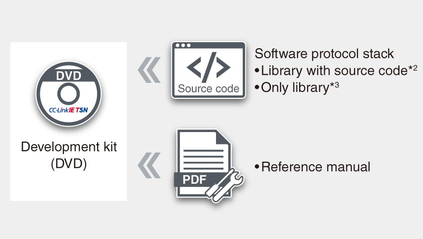
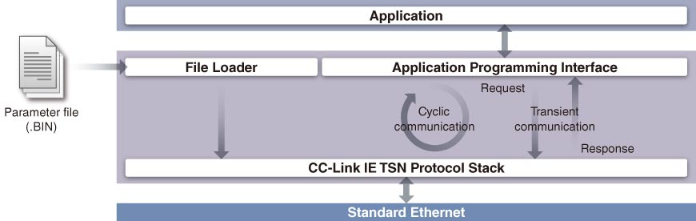
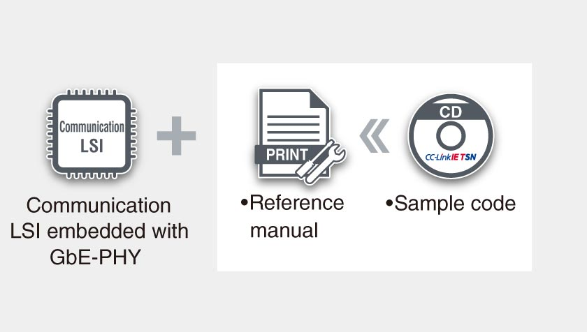
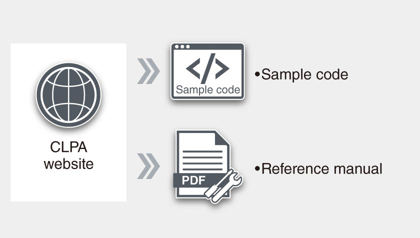
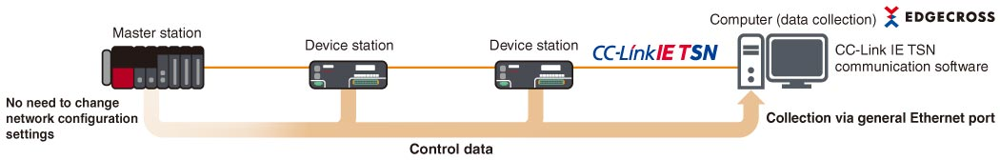

Network-related products |
Programmable Controllers MELSEC
CC-Link IE TSN Products

Development kits
Dedicated communication LSI CP610
- CC-Link IE TSN master station/local station can be developed without considering protocols
- Allows selection of MPU and OS freely. Customized sample codes according to hardware specifications and applications can be provided
- Parameter settings and diagnostics of the CC-Link IE TSN master station/local station can be done using the CC-Link IE TSN setting tool included in the source code development kit
- Provides SPICE model for PCI Express® interface and IBIS model for other interfaces as a transmission simulation model*1

- *1.Confidentiality agreement needs to be signed to provide SPICE model and IBIS model. Please consult with your local Mitsubishi Electric sales office.
Master station software development kit (SDK)
- Various systems can be configured using the software protocol stack irrespective of computers specifications
- API compliance with CANopen® makes it easy for developers of CANopen®-compatible products to develop CC-Link IE TSN-compatible products
- Source code package can be customized, enabling function expansion and porting to different development environments
- Kit with library allows system configuration at a lower cost
- Embedded functions improve devices by utilizing features such as mixing TCP/IP communication

- *2.SW1DTD-GNSDK1M
- *3.SW1DTD-GNSDK2M

Communication LSI embedded with GbE-PHY CP620
- CC-Link IE TSN remote station can be developed without considering protocols
- Embedded GbE-PHY enables easier communication circuit pattern development with fewer peripheral parts and circuits required around the CPU and GbE-PHY, thereby reducing board size
- Customized sample codes according to hardware specifications and applications can be provided
- Embedded hardware RTOS*4 reduces CPU load and power consumption

- *4.RTOS: Real-time operating system
Sample code for CC-Link IE TSN remote station class A (provided by the CC-Link Partner Association)
- Devices supporting CC-Link IE TSN remote stations class A can be developed just by implementing software protocol stack in devices equipped with Ethernet interface
Download sample code from the CC-Link Partner Association website below.
https://www.cc-link.org/en/cclink/cclinkie/code_cclinkie_tsn.html 

Communication software
CC-Link IE TSN communication software for Windows® (CC-Link IE TSN data collector enclosed)
- Easily collects accurate control data of CC-Link IE TSN devices
- Collected data from the function library can be utilized for data analysis and monitoring
- Realizes accurate data analysis by collection of control data with time-stamp
- Reduces configuration cost for realizing a simple data collection system as setup is straightforward utilizing computer-based software
- CC-Link IE TSN data collector enables integration with Edgecross
